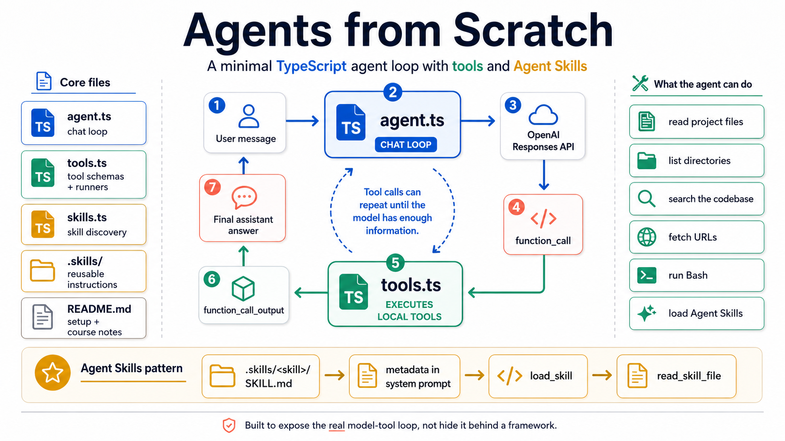

Minimal TypeScript agent
Build the loop before you hide it.
A compact course project that shows how agent.ts, tools.ts, skills.ts, and .skills work together around OpenAI function calls.
The core loop
A small agent you can trace line by line.
The model receives tool schemas, asks for function_call items, tools.ts executes local work, and function_call_output returns to the model until it can answer.
-
01
User message
The terminal prompt sends one message into the TypeScript chat loop.
-
02
agent.ts
The OpenAI request includes system instructions, skill metadata, and tools.
-
03
tools.ts
Local functions read files, list directories, search, fetch URLs, and run Bash.
-
04
Assistant answer
The loop stops when the model returns final text instead of another tool call.
Architecture at a glance
The whole repo fits in one diagram.
The infographic maps the core files, the repeated tool-call cycle, and the Agent Skills pattern that lets the model load instructions only when needed.
Core files
Few files, clear responsibilities.
The repository keeps the architecture close to the surface: one loop, one tool module, one skill module, and a small library of example skills.
Creates Responses API calls and continues after function outputs.
Defines the model-facing tools and executes local work.
Finds valid SKILL.md files and injects metadata into context.
Stores small procedural capabilities the model can load on demand.
Agent Skills
Instructions stay small until they matter.
Skill metadata appears in the system prompt. Full skill instructions and references load only when the user task calls for them.
Run it
Install, start, inspect.
git clone https://github.com/BirgerMoell/agents
cd agents
npm install
export OPENAI_API_KEY=sk-...
npm start